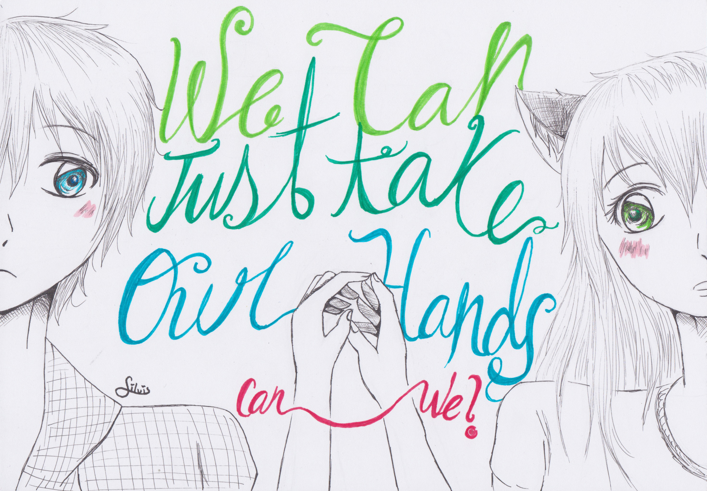
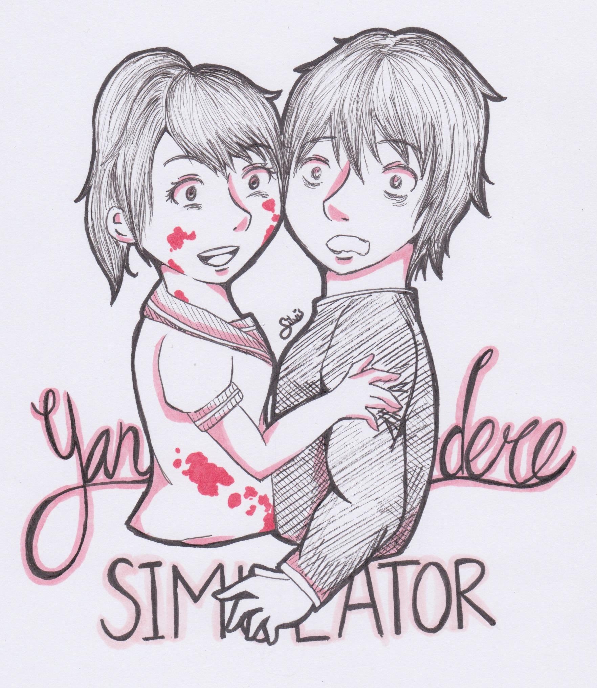
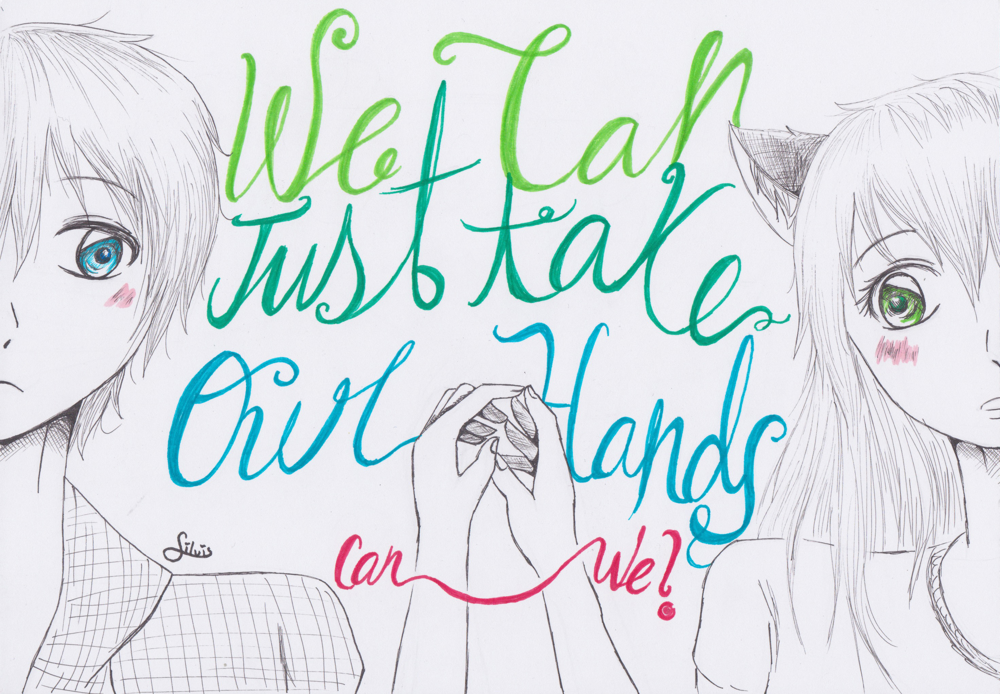
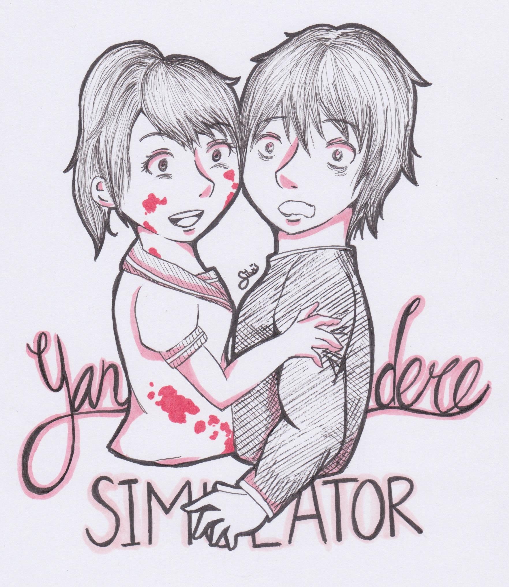

Inktober 2015

 




Reto que se hace cada año en octubre, consiste en hacer cada día un dibujo diferente con tinta hasta completar los 31 días, fue muy interesante y retador hacerlo >.< además aprendí mucho mas a manejar rotuladores y rapidografos ♥ ¡muy buena práctica!